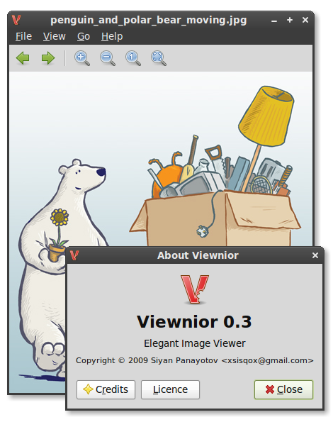

About
This is Viewnior, an image viewer program. Developed by Siyan Panayotov. Created to be simple, fast
and elegant. It's minimalistic interface provides more screenspace for
your images. Among its features are:
- Opening only selected files and/or directories
- Mouse and keyboard zooming
- Scrolling and dragging
- GIF Animation support
Viewnior is insipred by big projects like Eye of Gnome, because of it's usability and richness,
and by GPicView, because of it's lightweight design and minimal interface. So here comes
Viewnior - small and light, with no compromise with the quality of it's functions.
The program is made with better integration in mind (follows Gnome HIG2)
FAQ
What do i need to compile Viewnior?
Viewnior depends only on gtk+-2.0 (it contains everything needed).
Is Viewnior available for Windows/MacOSX?
No, at this time, no. Viewnior is made with portabilty in mind and is tested only under GNU/Linux.
If you'd like to test/compile it under other platforms, you are welcome. In case of succesful porting - tell me, we can come up with something.
How can I help?
As on open-source software, Viewnior is nothing without You. So YES, you can help much - test, comment, tell everyone about us.
Developers wishing to give a helping hand can
contact me.
I have an idea/suggestion. How can I share it with you?
At this time, there is no public way to do it. You can
contact me. (don't be shy, I don't bite :)
for everything you want to share.
Is Viewnior suitable for default image viewer?
Yes, it is. It has all the basic features for a everyday use. See
To Do.
How can I translate Viewnior?
Clone the
git repo, translate, then write me a pull request. If you don't like using Git, send me your *.po file over e-mail and some more info about you (links to other software translated by you).
To Do
In the future, I would like to see Viewnior able to:
- Rotate images
- Set image as background (ready for the next release!)
- Move image to Trash
- Show more information about the current image
If you can/want to help, first contact me, because I'm already working on some of this features. For more information, browse the git repo
Downloads
VIEWNIOR 0.3
What's new?
- Viewnior got translated! To add your language, see here.
- File navigation added!
- Better interface! New Menubar and Toolbar.
Download here: viewnior-0.3.tar.gz
Complete list of downloads: here